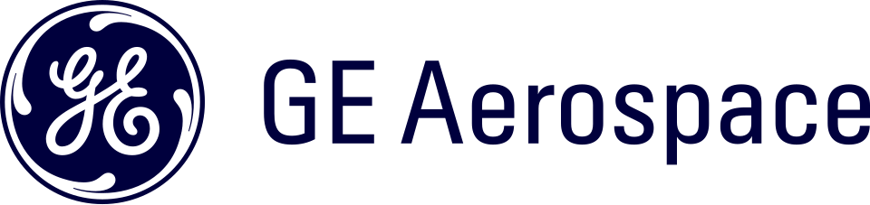
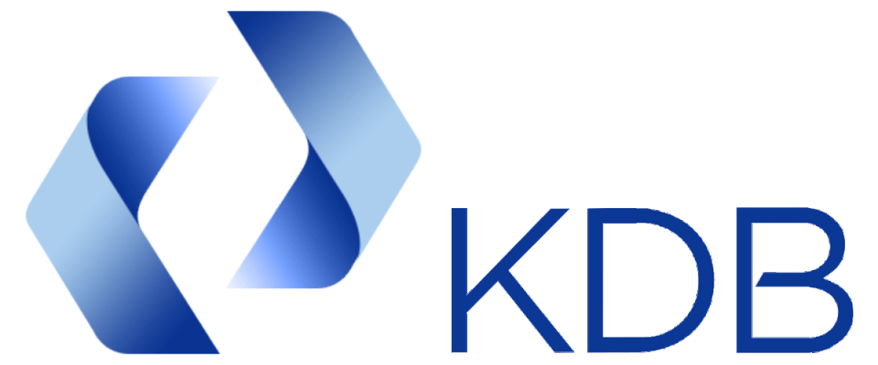
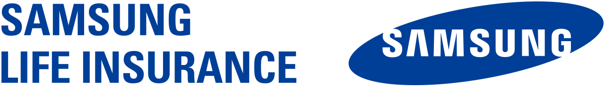
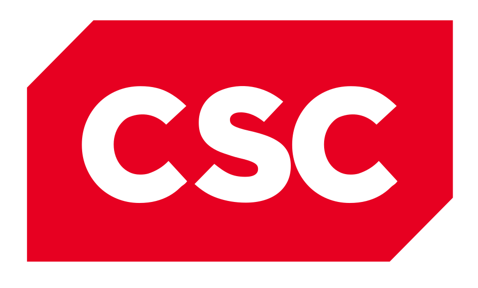
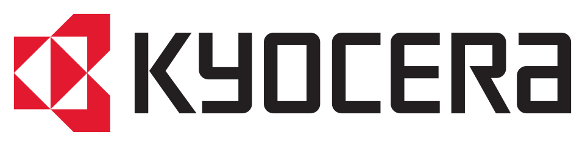
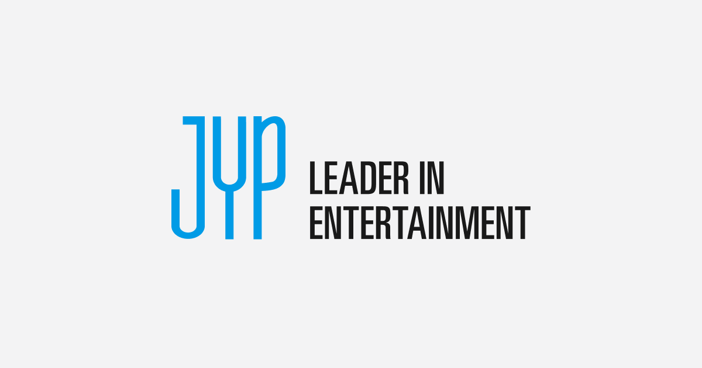
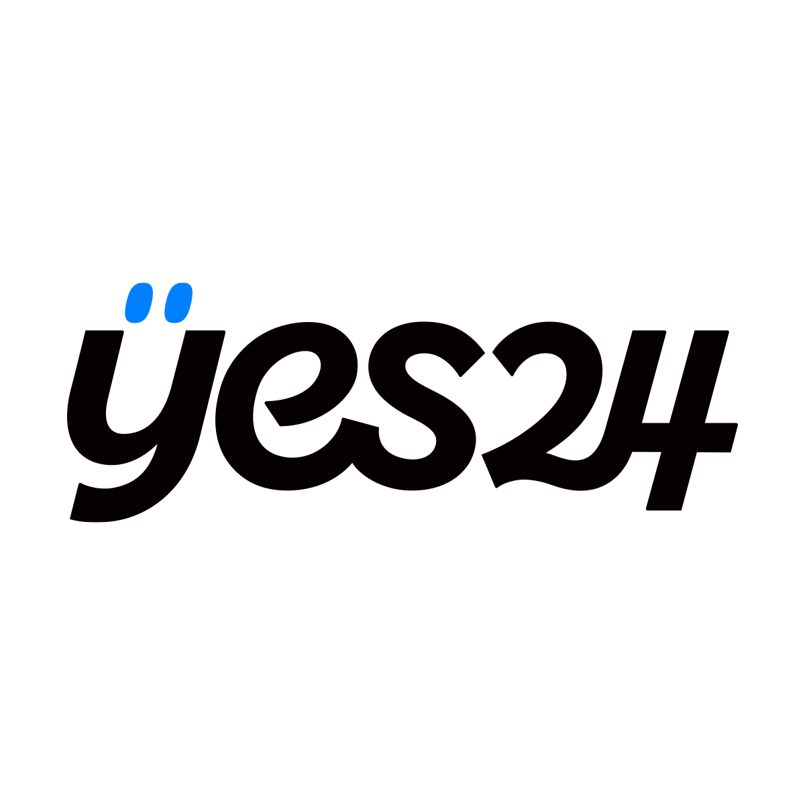
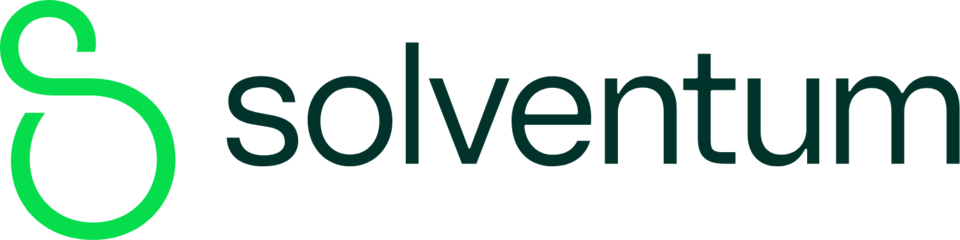

4월에 태어난 브랜드 132곳
4월에 태어난 브랜드 132곳을 탄생일 순으로 모았습니다. 마이크로소프트(Microsoft), Gmail, 스포티파이(Spotify)가 모두 4월생입니다.
2026년 4월, 주년을 맞는 브랜드
- 175주년
 웨스턴 유니온(Western Union)1851년 4월 8일 탄생
웨스턴 유니온(Western Union)1851년 4월 8일 탄생 - 120주년
 미즈노(Mizuno Corporation)1906년 4월 1일 탄생
미즈노(Mizuno Corporation)1906년 4월 1일 탄생 - 120주년
 제록스(XEROX)1906년 4월 18일 탄생
제록스(XEROX)1906년 4월 18일 탄생 - 100주년
 아지프(AGIP)1926년 4월 3일 탄생
아지프(AGIP)1926년 4월 3일 탄생 - 100주년
 유나이티드 항공(United Airlines)1926년 4월 6일 탄생
유나이티드 항공(United Airlines)1926년 4월 6일 탄생 - 100주년
 이스턴 항공(Eastern Airlines)1926년 4월 19일 탄생
이스턴 항공(Eastern Airlines)1926년 4월 19일 탄생 - 80주년
 요넥스(Yonex)1946년 4월 탄생
요넥스(Yonex)1946년 4월 탄생 - 80주년
 프랑스 전력공사(Électricité de France)1946년 4월 8일 탄생
프랑스 전력공사(Électricité de France)1946년 4월 8일 탄생
4월 탄생 달력
날짜까지 확인된 113곳을 날짜 칸에 놓았습니다.
- 1미즈노DAF 트럭+18
- 2한국수력원자력
- 3아지프Semiconductor Manufacturing International Corporation+4
- 4워너 브라더스마이크로소프트+3
- 5엔비디아SM스튜디오스
- 6바스프유나이티드 항공+3
- 7브룩필드 자산운용파크시스템스+1
- 8웨스턴 유니온프랑스 전력공사+3
- 9Companhia Siderúrgica Nacional삼화페인트
- 10에어 캐나다애브비
- 11해럴드 앤 울프뉴스1
- 12바르질라닥터 마틴+3
- 13주성엔지니어링
- 14J. C. 페니앵글로-페르시아 석유회사+3
- 15GE 에어로스페이스유코스+1
- 16A.P. 몰러-머스크 그룹한국도심공항
- 17올스테이트처치스 치킨+4
- 18런던 자연사박물관제록스+2
- 19아에게텔레포니카+3
- 20Erie Insurance Group
- 21페로비에 델로 스타토 이탈리아네Snap-on+2
- 22미쓰비시 자동차삼성바이오로직스
- 23몬트리올 미술관허니웰+3
- 24미국 의회도서관삼성생명
- 25RWEJYP엔터테인먼트
- 26에어 뉴질랜드
- 27클럽메드한화솔루션+2
- 28맥도널 더글러스웅진식품+2
- 29벨 캐나다
- 30유니버설 픽처스경동나비엔+1
4월생 브랜드 연대순
 미국 의회도서관(Library of Congress)미국 · 미디어·엔터테인먼트
미국 의회도서관(Library of Congress)미국 · 미디어·엔터테인먼트 바르질라(Wärtsilä)핀란드 · 에너지·산업재
바르질라(Wärtsilä)핀란드 · 에너지·산업재- 웨스턴 유니온(Western Union)미국 · 금융
 몬트리올 미술관(Musée des beaux-arts de Montréal)미디어·엔터테인먼트
몬트리올 미술관(Musée des beaux-arts de Montréal)미디어·엔터테인먼트 해럴드 앤 울프(Harland and Wolff)영국 · 에너지·산업재
해럴드 앤 울프(Harland and Wolff)영국 · 에너지·산업재 바스프(BASF)독일 · 브랜드·비즈니스
바스프(BASF)독일 · 브랜드·비즈니스 벨 캐나다(Bell Canada)캐나다 · 기술·전자
벨 캐나다(Bell Canada)캐나다 · 기술·전자 런던 자연사박물관(Natural History Museum)미디어·엔터테인먼트
런던 자연사박물관(Natural History Museum)미디어·엔터테인먼트 아에게(AEG)독일 · 기술·전자
아에게(AEG)독일 · 기술·전자 허니웰(Honeywell)미국 · 에너지·산업재
허니웰(Honeywell)미국 · 에너지·산업재
GE 에어로스페이스(GE Aerospace)미국 · 에너지·산업재 RWE독일 · 에너지·산업재
RWE독일 · 에너지·산업재 브룩필드 자산운용(Brookfield Corporation)캐나다 · 금융
브룩필드 자산운용(Brookfield Corporation)캐나다 · 금융 J. C. 페니(J. C. Penney)미국 · 리테일·커머스
J. C. 페니(J. C. Penney)미국 · 리테일·커머스 A.P. 몰러-머스크 그룹(Maersk)덴마크 · 모빌리티
A.P. 몰러-머스크 그룹(Maersk)덴마크 · 모빌리티 페로비에 델로 스타토 이탈리아네(Ferrovie dello Stato Italiane)이탈리아 · 모빌리티
페로비에 델로 스타토 이탈리아네(Ferrovie dello Stato Italiane)이탈리아 · 모빌리티- 미즈노(Mizuno Corporation)일본 · 스포츠·아웃도어
- 제록스(XEROX)미국 · 기술·전자
- 앵앵글로-페르시아 석유회사(Anglo-Persian Oil Company)영국 · 에너지·산업재
 유니버설 픽처스(Universal Pictures)미국 · 미디어·엔터테인먼트
유니버설 픽처스(Universal Pictures)미국 · 미디어·엔터테인먼트 Snap-on미국 · 에너지·산업재
Snap-on미국 · 에너지·산업재 워너 브라더스(Warner Bros. Entertainment)미국 · 미디어·엔터테인먼트
워너 브라더스(Warner Bros. Entertainment)미국 · 미디어·엔터테인먼트 메트로 골드윈 메이어(Metro-Goldwyn-Mayer)미국 · 미디어·엔터테인먼트
메트로 골드윈 메이어(Metro-Goldwyn-Mayer)미국 · 미디어·엔터테인먼트 텔레포니카(Telefónica)스페인 · 기술·전자
텔레포니카(Telefónica)스페인 · 기술·전자 Erie Insurance Group금융
Erie Insurance Group금융- 아지프(AGIP)에너지·산업재
- 유나이티드 항공(United Airlines)미국 · 여행·호스피탈리티
- 이스턴 항공(Eastern Airlines)미국 · 기술·전자
 볼보자동차(Volvo Cars)스웨덴 · 모빌리티
볼보자동차(Volvo Cars)스웨덴 · 모빌리티 DAF 트럭(DAF)네덜란드 · 모빌리티
DAF 트럭(DAF)네덜란드 · 모빌리티 올스테이트(Allstate)미국 · 금융
올스테이트(Allstate)미국 · 금융 알래스카 항공(Alaska Airlines)미국 · 여행·호스피탈리티
알래스카 항공(Alaska Airlines)미국 · 여행·호스피탈리티- 에어 캐나다(Air Canada)캐나다 · 여행·호스피탈리티
 PerkinElmer미국 · 헬스·제약
PerkinElmer미국 · 헬스·제약- 네스카페(Nescafe)식음료
 에어 뉴질랜드(Air New Zealand)뉴질랜드 · 여행·호스피탈리티
에어 뉴질랜드(Air New Zealand)뉴질랜드 · 여행·호스피탈리티 Companhia Siderúrgica Nacional브라질 · 에너지·산업재
Companhia Siderúrgica Nacional브라질 · 에너지·산업재- 요넥스(Yonex)일본 · 스포츠·아웃도어
- 프랑스 전력공사(Électricité de France)프랑스 · 에너지·산업재
 삼화페인트(Samhwa Paints)한국 · 홈·라이프스타일
삼화페인트(Samhwa Paints)한국 · 홈·라이프스타일- 베스파(Vespa)이탈리아 · 모빌리티
- 토이저러스(Toys "R" Us)미국 · 리테일·커머스
 런던전기위원회(London Electricity Board)에너지·산업재
런던전기위원회(London Electricity Board)에너지·산업재 클럽메드(CLUB MED)프랑스 · 여행·호스피탈리티
클럽메드(CLUB MED)프랑스 · 여행·호스피탈리티 닥터 마틴(Dr. Martens)영국 · 패션·럭셔리
닥터 마틴(Dr. Martens)영국 · 패션·럭셔리- 처처치스 치킨(Church's Texas Chicken)미국 · 식음료
 SK그룹(SK Group)한국 · 에너지·산업재
SK그룹(SK Group)한국 · 에너지·산업재
한국산업은행(Korea Development Bank)한국 · 금융 코오롱인더스트리(Kolon Industries)한국 · 브랜드·비즈니스
코오롱인더스트리(Kolon Industries)한국 · 브랜드·비즈니스- 코코오롱그룹(KOLON Group)한국 · 에너지·산업재

삼성생명(Samsung Life Insurance)한국 · 브랜드·비즈니스 워너 뮤직 그룹(Warner Music Group)미국 · 미디어·엔터테인먼트
워너 뮤직 그룹(Warner Music Group)미국 · 미디어·엔터테인먼트
Computer Sciences Corporation미국 · 기술·전자 SNT다이내믹스(SNT Dynamics)한국 · 에너지·산업재
SNT다이내믹스(SNT Dynamics)한국 · 에너지·산업재
교세라(Kyocera)일본 · 기술·전자 요도바시 카메라(Yodobashi Camera)일본 · 리테일·커머스
요도바시 카메라(Yodobashi Camera)일본 · 리테일·커머스 오릭스(Orix)일본 · 금융
오릭스(Orix)일본 · 금융- 맥도널 더글러스(McDonnell Douglas)미국 · 에너지·산업재
- 춘천문화방송(Chuncheon Munhwa Broadcasting)한국 · 미디어·엔터테인먼트
 휴즈 에어웨스트(Hughes Airwest)기술·전자
휴즈 에어웨스트(Hughes Airwest)기술·전자 동원(Dongwon)한국 · 식음료
동원(Dongwon)한국 · 식음료 미쓰비시 자동차(Mitsubishi Motors)브랜드·비즈니스
미쓰비시 자동차(Mitsubishi Motors)브랜드·비즈니스 웨스턴 디지털(Western Digital)미국 · 기술·전자
웨스턴 디지털(Western Digital)미국 · 기술·전자 SAP독일 · 기술·전자
SAP독일 · 기술·전자- 롤랜드(Roland Corporation)일본 · 기술·전자
- 한화솔루션(Hanwha Solutions)한국 · 브랜드·비즈니스
 마이크로소프트(Microsoft)미국 · 기술·전자
마이크로소프트(Microsoft)미국 · 기술·전자 애플(Apple)기술·전자
애플(Apple)기술·전자 웅진식품(Woongjin Food)한국 · 식음료
웅진식품(Woongjin Food)한국 · 식음료 경동나비엔한국 · 기술·전자
경동나비엔한국 · 기술·전자- 보령메디앙스(Boryung Medience)한국 · 미디어·엔터테인먼트
 암젠(Amgen)미국 · 헬스·제약
암젠(Amgen)미국 · 헬스·제약- 페리카나(Pelicana Chicken)한국 · 식음료
 지샥(G-Shock)패션·럭셔리
지샥(G-Shock)패션·럭셔리 맥심 인터그레이티드(Maxim Integrated)미국 · 기술·전자
맥심 인터그레이티드(Maxim Integrated)미국 · 기술·전자 ASML Holding네덜란드 · 기술·전자
ASML Holding네덜란드 · 기술·전자 벤큐(BenQ)기술·전자
벤큐(BenQ)기술·전자 일본담배산업(Japan Tobacco)일본 · 식음료
일본담배산업(Japan Tobacco)일본 · 식음료 일본전신전화(NTT, Inc.)일본 · 기술·전자
일본전신전화(NTT, Inc.)일본 · 기술·전자- 한한국도심공항(City Air Logistics & Transportation)한국 · 모빌리티
 기가바이트 테크놀로지(Gigabyte Technology)대만 · 기술·전자
기가바이트 테크놀로지(Gigabyte Technology)대만 · 기술·전자 레드불(Red Bull)오스트리아 · 식음료
레드불(Red Bull)오스트리아 · 식음료- Japan Railways Group일본 · 모빌리티
 에이수스(ASUS)대만 · 기술·전자
에이수스(ASUS)대만 · 기술·전자 THQ미국 · 미디어·엔터테인먼트
THQ미국 · 미디어·엔터테인먼트 AECOM미국 · 에너지·산업재
AECOM미국 · 에너지·산업재 ABSA Group Limited남아프리카공화국 · 금융
ABSA Group Limited남아프리카공화국 · 금융- 엔비디아(Nvidia)미국 · 기술·전자
 유코스(Yukos)러시아 · 에너지·산업재
유코스(Yukos)러시아 · 에너지·산업재 수프림(Supreme)미국 · 패션·럭셔리
수프림(Supreme)미국 · 패션·럭셔리 넷스케이프(Netscape)미국 · 기술·전자
넷스케이프(Netscape)미국 · 기술·전자- 코원시스템(Cowon Systems)한국 · 기술·전자
- 주성엔지니어링(Jusung Engineering)한국 · 기술·전자
- 중중국전신집단유한공사(China Telecommunications Corporation)중국 · 기술·전자

JYP엔터테인먼트(JYP Entertainment)한국 · 미디어·엔터테인먼트 파크시스템스(Park Systems)한국 · 기술·전자
파크시스템스(Park Systems)한국 · 기술·전자 버쉬카(Bershka)스페인 · 패션·럭셔리
버쉬카(Bershka)스페인 · 패션·럭셔리 롯데마트(Lotte Mart)리테일·커머스
롯데마트(Lotte Mart)리테일·커머스 인천교통공사(Incheon Transit Corporation)한국 · 모빌리티
인천교통공사(Incheon Transit Corporation)한국 · 모빌리티
예스24(YES24)미디어·엔터테인먼트 웹젠(Webzen)한국 · 미디어·엔터테인먼트
웹젠(Webzen)한국 · 미디어·엔터테인먼트 그라비티(Gravity)한국 · 미디어·엔터테인먼트
그라비티(Gravity)한국 · 미디어·엔터테인먼트 Semiconductor Manufacturing International Corporation기술·전자
Semiconductor Manufacturing International Corporation기술·전자 버라이즌 와이어리스(Verizon Wireless)미국 · 기술·전자
버라이즌 와이어리스(Verizon Wireless)미국 · 기술·전자 알라 푸드(Arla Foods)덴마크 · 식음료
알라 푸드(Arla Foods)덴마크 · 식음료- 한국수력원자력(Korea Hydro & Nuclear Power)한국 · 에너지·산업재
 몬스터 에너지(Monster Energy)식음료
몬스터 에너지(Monster Energy)식음료 일본우정(Japan Post)브랜드·비즈니스
일본우정(Japan Post)브랜드·비즈니스 Gmail미국 · 기술·전자
Gmail미국 · 기술·전자 아스테라스 제약(Astellas Pharma)일본 · 헬스·제약
아스테라스 제약(Astellas Pharma)일본 · 헬스·제약 스포티파이(Spotify)스웨덴 · 기술·전자
스포티파이(Spotify)스웨덴 · 기술·전자- 주주식회사 트위터(Twitter, Inc.)미국 · 미디어·엔터테인먼트
 톰슨 로이터(Thomson Reuters)캐나다 · 미디어·엔터테인먼트
톰슨 로이터(Thomson Reuters)캐나다 · 미디어·엔터테인먼트 크라이슬러(Stellantis North America)미국 · 모빌리티
크라이슬러(Stellantis North America)미국 · 모빌리티 SK바이오팜(SK Biopharmaceuticals)한국 · 헬스·제약
SK바이오팜(SK Biopharmaceuticals)한국 · 헬스·제약 뉴스1(News1)한국 · 미디어·엔터테인먼트
뉴스1(News1)한국 · 미디어·엔터테인먼트- 줌 커뮤니케이션즈(Zoom Communications)미국 · 기술·전자
 삼성바이오로직스(Samsung Biologics)한국 · 헬스·제약
삼성바이오로직스(Samsung Biologics)한국 · 헬스·제약- 불닭볶음면(Buldak Ramen)한국 · 식음료
 삼성디스플레이(Samsung Display)한국 · 기술·전자
삼성디스플레이(Samsung Display)한국 · 기술·전자 두나무(Dunamu)한국 · 금융
두나무(Dunamu)한국 · 금융- 애브비(AbbVie)미국 · 헬스·제약
 에어서울(Air Seoul)모빌리티
에어서울(Air Seoul)모빌리티- 원익IPS(Wonik IPS)기술·전자
 파라타항공(Parata Air)한국 · 모빌리티
파라타항공(Parata Air)한국 · 모빌리티 HD건설기계(HD Hyundai Construction Equipment)한국 · 에너지·산업재
HD건설기계(HD Hyundai Construction Equipment)한국 · 에너지·산업재 DXC 테크놀로지(DXC Technology)미국 · 기술·전자
DXC 테크놀로지(DXC Technology)미국 · 기술·전자 RTX 코퍼레이션(RTX)미국 · 에너지·산업재
RTX 코퍼레이션(RTX)미국 · 에너지·산업재 SM스튜디오스(SM Studios)한국 · 미디어·엔터테인먼트
SM스튜디오스(SM Studios)한국 · 미디어·엔터테인먼트 워너 브라더스 디스커버리(Warner Bros. Discovery)미국 · 미디어·엔터테인먼트
워너 브라더스 디스커버리(Warner Bros. Discovery)미국 · 미디어·엔터테인먼트- QwenAI·인공지능

Solventum미국 · 헬스·제약
4월에 태어난 것으로 확인된 브랜드는 132곳입니다. 가장 오래된 곳은 1800년의 미국 의회도서관(Library of Congress), 가장 최근은 2024년의 Solventum입니다. 2026년 4월에는 웨스턴 유니온(Western Union)(175주년), 미즈노(Mizuno Corporation)(120주년), 제록스(XEROX)(120주년) 등 19곳이 주년을 맞습니다. 생일이 같은 브랜드도 있습니다. 4월 1일에는 미즈노(Mizuno Corporation)(1906)와 DAF 트럭(DAF)(1928)와 네스카페(Nescafe)(1938), 4월 3일에는 아지프(AGIP)(1926)와 Semiconductor Manufacturing International Corporation(2000)와 두나무(Dunamu)(2012)가 태어났습니다. 설립연도가 확인된 브랜드는 132개이며 가장 오래된 곳은 1800년, 가장 최근은 2024년에 시작했습니다. 시기별로는 1900년 이전 13개, 1900~1949년 30개, 1950~1999년 57개, 2000년 이후 32개입니다. 수록 자료로는 로고 이미지 126개, 로고 변천 자료 9개, 연혁 타임라인 20개를 갖췄습니다. 이 가운데 113개는 공식 웹사이트가 일치하는 위키데이터 개체로 연결해 두었습니다. 날짜는 위키데이터, 위키백과 정보상자, 브랜드 본문 가운데 같은 연월로 확인되는 값만 썼고, 출처끼리 다르면 싣지 않았습니다.